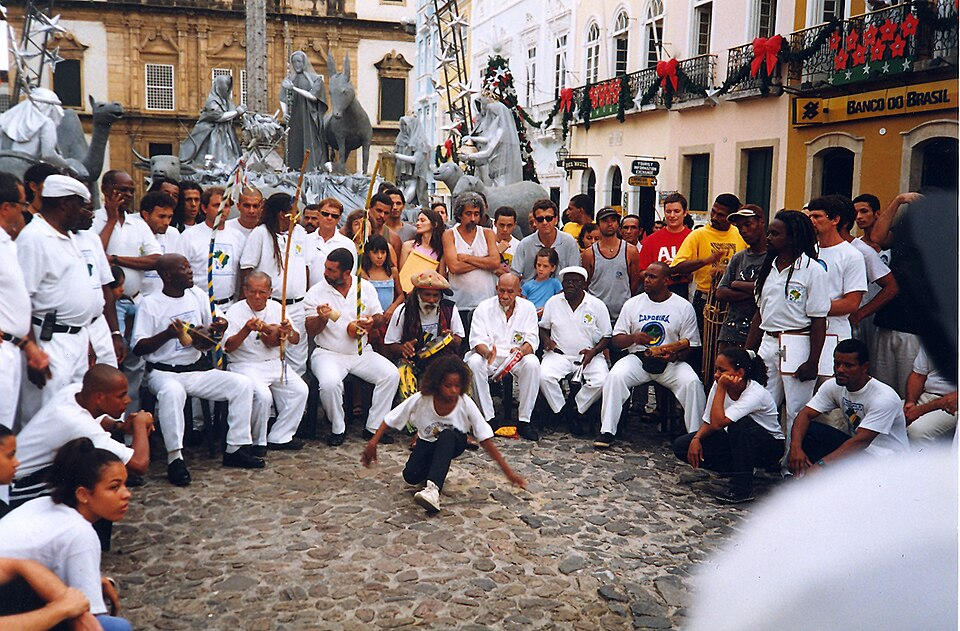
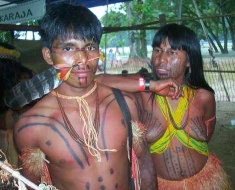
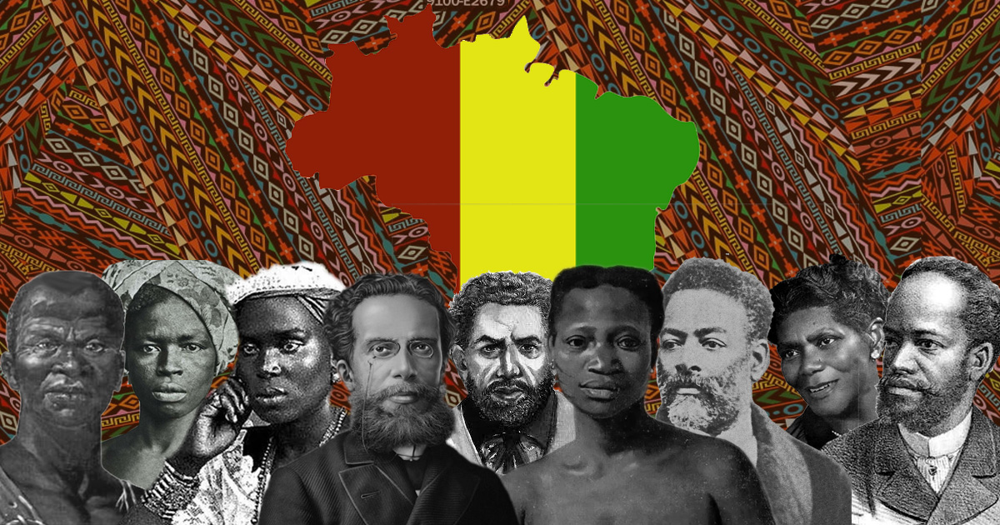
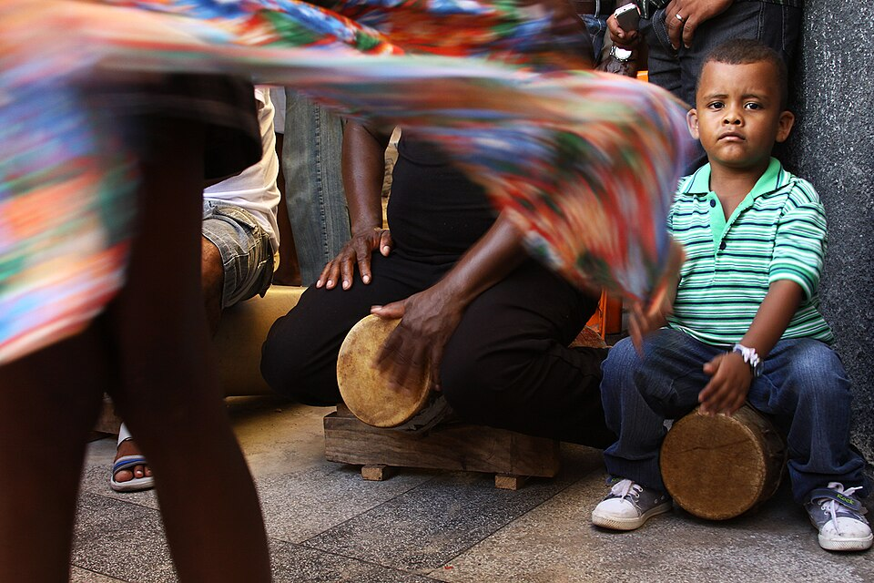
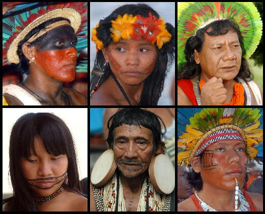
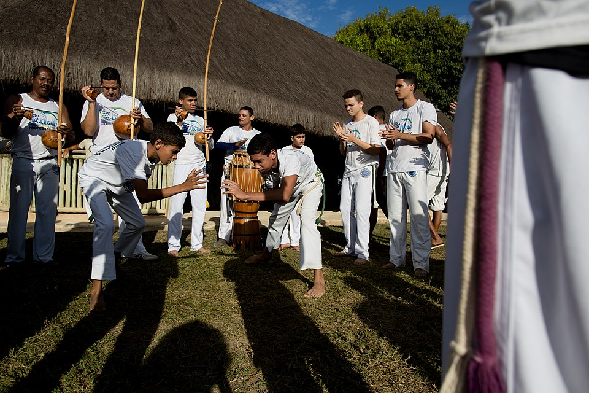
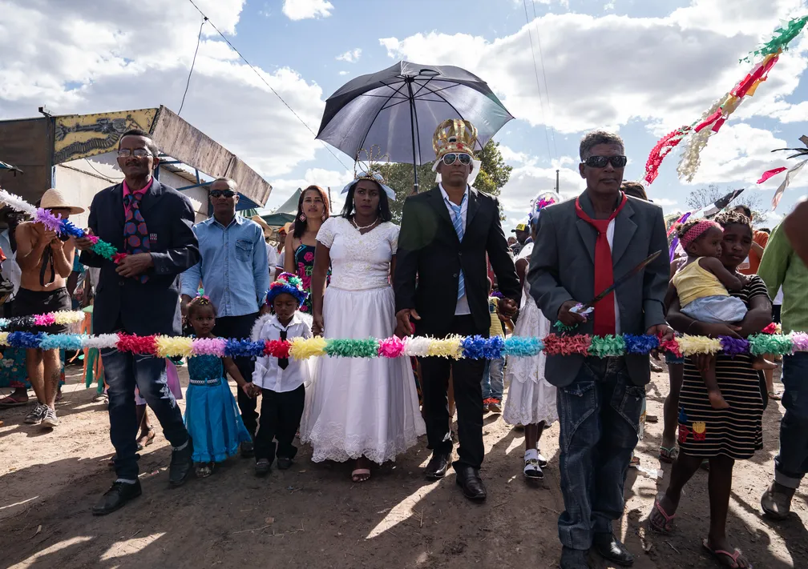
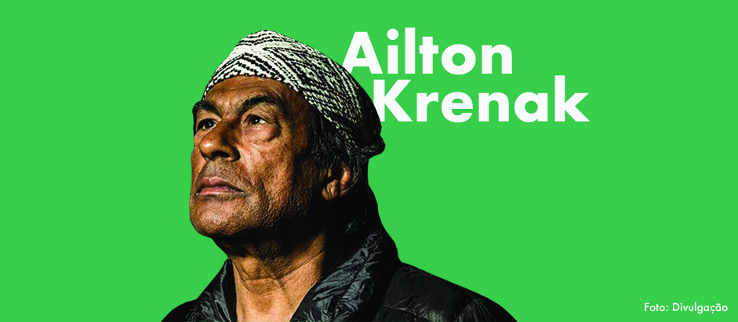
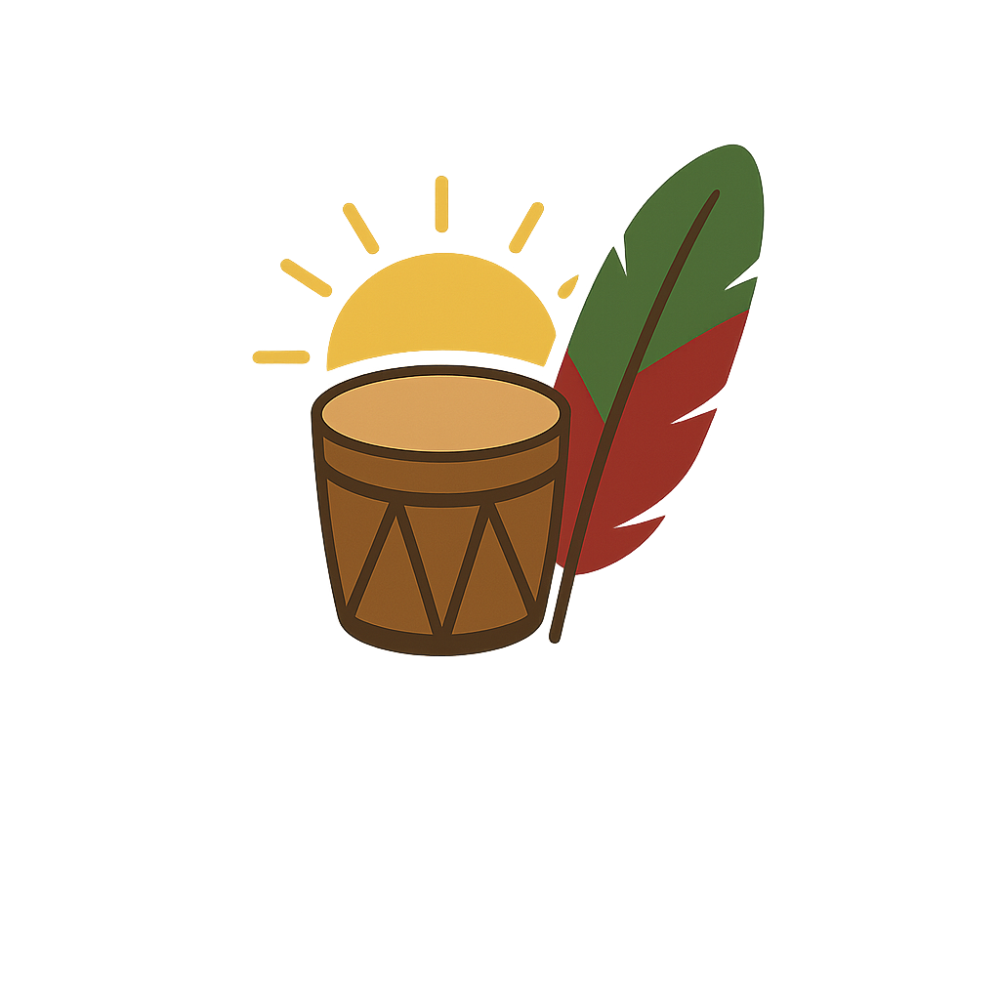

Raízes Vivas: Pesquisa e Conscientização em Prol da Diversidade
Um mergulho nas contribuições e na riqueza cultural dos povos que construíram e continuam a moldar a identidade brasileira.
Saiba MaisNossa Herança
A Força Afro-Brasileira
Descubra a riqueza da cultura afro-brasileira, suas lutas, tradições, culinária, música e a resiliência de um povo que construiu parte fundamental do Brasil.
Leia mais →Saberes Indígenas
Explore a profundidade dos saberes ancestrais dos povos indígenas, sua conexão com a natureza, suas línguas, arte e a importância da sua preservação.
Leia mais →Legislação e Conscientização
Entenda as leis que visam valorizar e proteger as culturas afro-brasileira e indígena, combatendo o racismo e promovendo a diversidade em nossa sociedade.
Leia mais →História e Cultura Afro-Brasileira
A história da população afro-brasileira é marcada pela resistência. Os quilombos, por exemplo, não eram apenas locais de refúgio, mas comunidades autônomas que preservavam a cultura e a liberdade. Lideranças como Zumbi dos Palmares se tornaram símbolos dessa luta, representando a força e a insubmissão.
A cultura afro-brasileira se manifesta em todas as esferas da nossa vida. Na culinária, a influência africana é riquíssima, com pratos como a moqueca, o acarajé e a feijoada, que utilizam ingredientes e técnicas trazidos da África. A música, a dança (como a capoeira e o samba) e as religiões de matriz africana (Candomblé e Umbanda) são pilares que enriquecem nossa identidade cultural. O sincretismo religioso, que associou orixás a santos católicos, é um exemplo da capacidade de adaptação e preservação da fé.
Intelectuais como Maria Firmina dos Reis, considerada a primeira romancista negra do Brasil, também abriram caminho, usando a literatura para denunciar a escravidão e defender os direitos humanos.
História e Cultura Indígena
A diversidade dos povos indígenas se reflete na imensa pluralidade de biomas do Brasil. Sua profunda conexão com a terra não é apenas cultural, mas um conhecimento ancestral vital para a preservação do meio ambiente. Eles são os guardiões da floresta.
As línguas indígenas também deixaram uma marca permanente no português que falamos, com palavras de origem tupi presentes em nossa geografia (Ipanema, Piauí), fauna (jacaré, tucano) e flora (mandioca, açaí). Essa herança linguística é uma prova viva de sua contribuição para a nossa identidade. Além disso, a arte plumária e o grafismo não são apenas decorativos; eles representam a identidade, a história e a cosmologia de cada povo.
A luta por direitos e pela demarcação de terras continua. Líderes como Txai Suruí levam a causa indígena a fóruns internacionais, mostrando ao mundo a urgência de proteger não apenas um povo, mas a própria biodiversidade do planeta. O respeito à cultura indígena é um passo crucial para um futuro sustentável.
Povos Indígenas no Rio Grande do Sul
O Rio Grande do Sul é o lar de diversas comunidades indígenas, cada uma com sua própria história, língua e tradições. Conhecer esses povos é fundamental para entender a riqueza cultural e a luta por seus direitos no estado.
Kaingang
O povo Kaingang habita predominantemente a região norte do estado. Sua cultura é marcada por uma forte ligação com a natureza, por rituais e por uma estrutura social complexa. Eles são conhecidos pela sua resiliência e pela defesa de seus territórios.
Saiba mais: Instituto Socioambiental | Portal Kaingang
Guarani
Os Guarani estão mais dispersos pelo sul e leste do estado. Sua cultura, fortemente ligada à espiritualidade e à terra sem males, se manifesta em práticas como a agricultura e o artesanato. A luta por seus territórios tradicionais, as "Tekoa", é central para sua sobrevivência cultural.
Saiba mais: Instituto Socioambiental | Survival International
Charrua
O povo Charrua, historicamente visto como extinto no Brasil, tem um importante movimento de re-existência. Hoje, estão localizados em uma área municipal no extremo-sul de Porto Alegre, buscando o reconhecimento de sua identidade e a valorização de sua cultura.
Saiba mais: UFRGS | Wikipédia | BBC News Brasil
Xokleng
Os Xokleng, também conhecidos como Laklãnõ, ocupam uma área da Floresta Nacional de São Francisco de Paula, na serra gaúcha. Sua luta é focada na preservação da floresta e na garantia de seu direito à terra, defendendo não apenas seu povo, mas todo o bioma local.
Saiba mais: BBC News Brasil | Instituto Socioambiental
Mapeamento de Ações Locais em Porto Alegre e Região
Conheça a Romaria de Nossa Senhora da Abadia, festejo do Quilombo Kalunga
Como parte do nosso projeto, fizemos uma pesquisa de locais que promovem a cultura e a resistência negra e indígena em Porto Alegre e região. Conheça alguns coletivos e organizações importantes na cidade:
Museu de Percurso do Negro
Localizado no centro de Porto Alegre, este museu a céu aberto conta a história e a contribuição da população negra na formação da cidade. É um roteiro histórico e cultural de grande relevância.
Coletivo Preta Velha
Localizado no bairro de Santa Tereza, atua com foco na cultura negra, espiritualidade e empoderamento comunitário. É um importante ponto de resistência e celebração.
Instagram: @coletivopretavelha
Centro de Referência Indígena-Afro do Rio Grande do Sul (CRIA-RS)
O CRIA-RS é uma iniciativa pioneira para promover o diálogo e a visibilidade das pautas dos povos indígenas e das comunidades de matriz africana no estado. O centro atua como um espaço de articulação, pesquisa e desenvolvimento de políticas públicas.
Acesse: Site oficial e mais informações
Comunidade Quilombola de Areal da Baronesa
Um dos mais antigos quilombos urbanos do Brasil, localizado em Porto Alegre. A comunidade de Areal da Baronesa é um marco de resistência e um berço do samba na capital gaúcha, mantendo vivas as tradições ancestrais e a luta pela garantia de seu território.
Saiba mais: Mapa de Conflitos | Prefeitura de Porto Alegre | Brasil de Fato
Núcleo de Estudos Afro-brasileiro e Indígena (NEABI)
Presentes em diversas instituições de ensino, os NEABIs promovem a pesquisa, o ensino e a extensão sobre as culturas afro-brasileira e indígena. São espaços de fundamental importância para a produção de conhecimento e o combate ao racismo e à discriminação no ambiente acadêmico.
Acesse: Exemplo no IFRS
Circuito de Música Afro e Indígena Contemporânea
Um projeto que celebra e dá visibilidade a artistas da música negra e indígena contemporânea. O circuito promove shows, palestras e workshops, fortalecendo a cena cultural e valorizando a produção artística desses povos.
Acesse: Instagram | Reportagem
PoAncestral
O PoAncestral é um evento que celebra a cultura e a ancestralidade afro-indígena na cidade, com foco em arte, música e resistência. É um espaço de encontro e celebração que fortalece a identidade e o senso de comunidade.
Acesse: UFRGS | Reportagem
Vozes que Inspiram
Ailton Krenak
Uma das vozes mais respeitadas do movimento indígena, Ailton Krenak é escritor, filósofo e ativista. Sua obra "Ideias para adiar o fim do mundo" é uma inspiração para repensar nossa relação com o planeta.
Lélia Gonzalez
Intelectual, ativista e professora, foi uma das fundadoras do movimento negro no Brasil. Suas ideias sobre "Amefricanidade" e a mulher negra são essenciais para entender a identidade brasileira e o racismo estrutural.
Davi Kopenawa Yanomami
Líder e xamã do povo Yanomami, é um dos mais importantes ativistas indígenas do Brasil. Luta pela demarcação das terras e pela proteção da floresta contra a mineração e o garimpo ilegal.
Sueli Carneiro
Filósofa, escritora e ativista do movimento negro. É fundadora do Geledés - Instituto da Mulher Negra, uma das maiores organizações de mulheres negras do Brasil. Uma referência na luta contra o racismo e o sexismo.
Abdias do Nascimento
Ator, artista plástico, ativista e político. Fundou o Teatro Experimental do Negro (TEN) e é uma das figuras mais importantes na luta contra o racismo no Brasil no século XX.
Sonia Guajajara
Líder indígena e ativista ambiental. Foi a primeira mulher indígena a ocupar um ministério no Brasil (Ministério dos Povos Indígenas). Uma figura central na articulação de pautas indígenas e na denúncia de violações de direitos.
Leis e Direitos: Promovendo a Diversidade
A Lei nº 10.639/03 tornou obrigatório o ensino da História e Cultura Afro-Brasileira nas escolas do Brasil. Esta lei foi um marco fundamental para reconhecer a importância da contribuição africana na formação da sociedade brasileira, valorizando a identidade, a cultura e a história dos afrodescendentes.
Posteriormente, a Lei nº 11.645/08 ampliou essa obrigatoriedade, incluindo também a temática da História e Cultura Indígena no currículo escolar. Ambas as leis visam combater o racismo, o preconceito e a discriminação, promovendo o respeito à diversidade cultural e étnica do país, e garantindo que as futuras gerações conheçam e valorizem as raízes que formam o Brasil.
Objetivo da Extensão
Nosso projeto tem como objetivo dar visibilidade às lutas e expressões culturais afro-indígenas no Rio Grande do Sul, utilizando um site como plataforma de divulgação. Buscamos mapear coletivos, ONGs, grupos culturais e artísticos que trabalham na preservação da memória, cultura e direitos dessas populações. Através desse espaço digital, pretendemos valorizar as histórias e tradições afro-brasileiras e indígenas, sensibilizar a sociedade sobre sua importância e promover um diálogo mais justo e consciente. Esperamos que o site funcione como uma ponte entre as comunidades e o público, mostrando que resistência, arte e cultura são ferramentas essenciais para a construção de um futuro mais plural e respeitoso.
Acreditamos que, ao mapear e divulgar essas iniciativas, contribuímos para fortalecer a rede de apoio, incentivar a participação da comunidade e mostrar que a história e a cultura que apresentamos neste site estão vivas e em constante movimento.
Sobre o Projeto "Raízes Vivas"
Este projeto de extensão universitária foi desenvolvido pelo grupo Raízes Vivas, Integrantes Cristian de Lima Ribeiro e Victor Fraga da Silva, da faculdade de Análise e Desenvolvimento de Sistemas, como parte do programa "Extensão B - História e Cultura Afro-Indígena".
Nosso objetivo é promover o conhecimento, a valorização e o respeito pela rica história e cultura dos povos afro-brasileiros e indígenas, contribuindo para uma sociedade mais justa, consciente e antirracista. Acreditamos que a educação e a informação são ferramentas poderosas para construir um futuro onde todas as raízes sejam reconhecidas e celebradas.
Esperamos que este site sirva como um ponto de partida para a reflexão e para o aprofundamento nesses temas tão relevantes para a identidade brasileira.